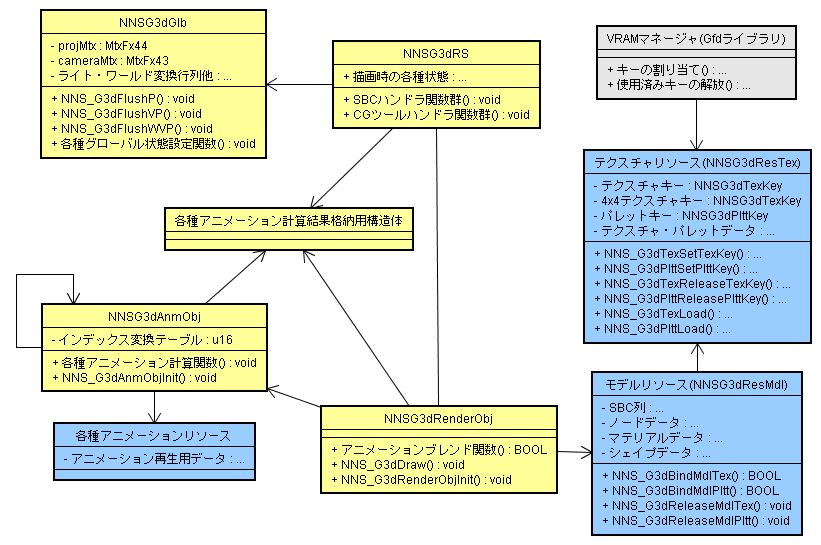

以下はG3Dの主要な構造体と関数の概略図です。ただしG3DはC言語で実装されていますので、クラスやメンバ関数といった形では実装されていません。

| NNS_G3dGlbInit | G3Dライブラリ内部で保持しているグローバル状態を初期化します。 |
|---|---|
| NNS_G3dGlbFlushP | G3Dライブラリ内部で保持しているグローバル状態をジオメトリエンジンに送信します。 |
| NNS_G3dGlbFlushVP | G3Dライブラリ内部で保持しているグローバル状態をジオメトリエンジンに送信します。 |
| NNS_G3dGlbFlushWVP | G3Dライブラリ内部で保持しているグローバル状態をジオメトリエンジンに送信します。 |
| NNS_G3dGlbSetBaseScale | グローバル状態のベーススケールに値を設定します。 |
| NNS_G3dGlbSetBaseRot | グローバル状態のベースローテーションに値を設定します。 |
| NNS_G3dGlbSetBaseTrans | グローバル状態のベーストランスレーションに値を設定します。 |
| NNS_G3dGlbLightVector | グローバル状態にライトの方向ベクトルを設定します。 |
| NNS_G3dGlbLightColor | グローバル状態にライトカラーを設定します。 |
| NNS_G3dGlbMaterialColorDiffAmb | グローバル状態に材質の拡散反射色(diffuse)と環境反射色(ambient)を設定します。 |
| NNS_G3dGlbMaterialColorSpecEmi | グローバル状態に材質の鏡面反射色(specular)と放射光色(emission)を設定します。 |
| NNS_G3dGlbPolygonAttr | グローバル状態にポリゴン関連属性値を設定します。 |
| NNS_G3dGlbSetViewPort | グローバル状態にビューポートを設定します。 |
| NNS_G3dGlbLookAt | グローバル状態にカメラ行列をセットします。 |
| NNS_G3dGlbPerspective | グローバル状態に透視射影行列をセットします。 |
| NNS_G3dGlbFrustum | グローバル状態に透視射影行列をセットします。 |
| NNS_G3dGlbOrtho | グローバル状態に正射影行列をセットします。 |
| NNS_G3dGlbPerspectiveW | グローバル状態に透視射影行列をセットします。（scaleWパラメータ付） |
| NNS_G3dGlbFrustumW | グローバル状態に透視射影行列をセットします。（scaleWパラメータ付） |
| NNS_G3dGlbOrthoW | グローバル状態に正射影行列をセットします。（scaleWパラメータ付） |
| NNS_G3dGlbSetProjectionMtx | グローバル状態に射影行列をセットします。 |
| NNS_G3dGlbGetCameraMtx | グローバル状態に設定されているカメラ行列へのポインタを返します。 |
| NNS_G3dGlbGetProjectionMtx | グローバル状態に設定されている射影行列へのポインタを返します。 |
| NNS_G3dGlbGetBaseRot | グローバル状態に設定されているオブジェクトの回転行列へのポインタを返します。 |
| NNS_G3dGlbGetBaseTrans | グローバル状態に設定されているオブジェクトの平行移動ベクトルへのポインタを返します。 |
| NNS_G3dGlbGetBaseScale | グローバル状態に設定されているオブジェクトのスケールベクトルへのポインタを返します。 |
| NNS_G3dGlbGetCameraPos | グローバル状態に設定されているカメラの位置ベクトルへのポインタを返します。 |
| NNS_G3dGlbGetCameraUp | グローバル状態に設定されているカメラの上方向ベクトルへのポインタを返します。 |
| NNS_G3dGlbGetCameraTarget | グローバル状態に設定されているカメラの焦点ベクトルへのポインタを返します。 |
| NNS_G3dGlbGetInvV | グローバル状態に設定されているカメラ行列の逆行列へのポインタを返します。 |
| NNS_G3dGlbGetInvW | グローバル状態に設定されているBaseSRT行列の逆行列へのポインタを返します。 |
| NNS_G3dGlbGetInvP | グローバル状態に設定されている射影行列の逆行列へのポインタを返します。 |
| NNS_G3dGlbGetWV | グローバル状態に設定されているBaseSRT行列にカメラ行列をかけた行列へのポインタを返します。 |
| NNS_G3dGlbGetInvWV | グローバル状態に設定されているBaseSRT行列にカメラ行列をかけた行列の逆行列へのポインタを返します。 |
| NNS_G3dGlbGetInvVP | グローバル状態に設定されているカメラ行列に射影行列をかけた行列の逆行列へのポインタを返します。 |
| NNS_G3dGlbGetViewPort | グローバル状態に設定されているビューポートを取得します。 |
| NNS_G3dAnmObjInit | アニメーションオブジェクトを初期化します。 |
|---|---|
| NNS_G3dAnmObjSetFrame | アニメーションオブジェクトのアニメーション再生フレームを設定します。 |
| NNS_G3dAnmObjSetBlendRatio | アニメーションオブジェクトのアニメーションブレンド比を設定します。 |
| NNS_G3dAnmObjGetNumFrame | アニメーションオブジェクトが参照するアニメーションのフレーム数を取得します。 |
| NNS_G3dAnmObjCalcSizeRequired | 指定されたモデルリソースに対応するアニメーションオブジェクトに必要なメモリサイズを返します。 |
| NNS_G3dAnmObjEnableID | 指定されたノードＩＤ／マテリアルIDのアニメーションを有効にします。 |
| NNS_G3dAnmObjDisableID | 指定されたノードＩＤ／マテリアルＩＤのアニメーションを無効にします。 |
| NNS_G3dRenderObjInit | レンダリングオブジェクトを初期化します。 |
| NNS_G3dRenderObjGetResMdl | レンダリングオブジェクトからモデルリソースへのポインタを取得します。 |
| NNS_G3dRenderObjAddAnmObj | レンダリングオブジェクトにアニメーションオブジェクトを追加します。 |
| NNS_G3dRenderObjRemoveAnmObj | レンダリングオブジェクトからアニメーションオブジェクトを削除します。 |
| NNS_G3dRenderObjSetUserSbc | レンダリングオブジェクトに ユーザー指定のsbc（Structure Byte Code）を登録します。 |
| NNS_G3dRenderObjSetJntAnmBuffer | レンダリングオブジェクトにジョイントアニメーション用バッファを登録します。 |
| NNS_G3dRenderObjSetMatAnmBuffer | レンダリングオブジェクトにマテリアルアニメーション用バッファを登録します。 |
| NNS_G3dRenderObjReleaseJntAnmBuffer | レンダリングオブジェクトに登録されているジョイントアニメーション用バッファを解除します。 |
| NNS_G3dRenderObjReleaseMatAnmBuffer | レンダリングオブジェクトに登録されているマテリアルアニメーション用バッファを解除します。 |
| NNS_G3dRenderObjSetCallBack | 描画処理中に呼び出されるコールバック関数を登録します。 |
| NNS_G3dRenderObjResetCallBack | 描画処理中に呼び出されるコールバック関数を消去します。 |
| NNS_G3dRenderObjSetInitFunc | 描画処理前に呼び出されるコールバック関数を登録します。 |
| NNS_G3dRenderObjSetUserPtr | 描画処理中に行うコールバック処理で使用できる領域へのポインタを設定します。 |
| NNS_G3dRenderObjSetFlag | レンダリングオブジェクトの実行制御フラグで指定されたものをセットします。 |
| NNS_G3dRenderObjResetFlag | レンダリングオブジェクトの実行制御フラグで指定されたものをリセットします。 |
| NNS_G3dRenderObjTestFlag | レンダリングオブジェクトの実行制御フラグがセットされているかどうかテストします。 |
| NNS_G3dRenderObjSetBlendFuncJnt | レンダリングオブジェクトにジョイントのブレンド関数を設定します。 |
| NNS_G3dRenderObjSetBlendFuncMat | レンダリングオブジェクトにマテリアルのブレンド関数を設定します。 |
| NNS_G3dRenderObjSetBlendFuncVis | レンダリングオブジェクトにビジビリティのブレンド関数を設定します。 |
| NNS_G3dTexGetRequiredSize | 通常テクスチャをVRAMに格納する場合に必要となるサイズを返します。 |
| NNS_G3dTex4x4GetRequiredSize | ４×４テクセル圧縮テクスチャをVRAMに格納する場合に必要となるサイズを返します。 |
| NNS_G3dTexSetTexKey | テクスチャリソースに、テクスチャを格納する為のメモリを示すテクスチャ・キーを設定します。 |
| NNS_G3dTexLoad | テクスチャを、設定されているテクスチャ・キーが指し示すVRAM領域にロードします。 |
| NNS_G3dTexReleaseTexKey | 参照していたテクスチャを放棄します。 |
| NNS_G3dPlttGetRequiredSize | パレットをVRAMに格納する場合に必要となるサイズを返します。 |
| NNS_G3dPlttSetPlttKey | テクスチャリソースに、パレットを格納する為のメモリを示すパレット・キーを設定します。 |
| NNS_G3dPlttLoad | パレットを設定されているパレット・キーが指し示すVRAM領域にロードします。 |
| NNS_G3dPlttReleasePlttKey | 参照していたパレットを放棄します。 |
| NNS_G3dBindMdlTex | モデルにテクスチャを関連付けます。 |
| NNS_G3dBindMdlTexEx | モデルに名前で指定されたテクスチャを関連付けます。 |
| NNS_G3dForceBindMdlTex | モデルにインデックスで指定されたテクスチャを強制的に関連付けます。 |
| NNS_G3dReleaseMdlTex | テクスチャに関連付けられているマテリアルのテクスチャエントリの関連付けを解除します。 |
| NNS_G3dReleaseMdlTexEx | 指定された名前をもつテクスチャに関連付けられているマテリアルのテクスチャエントリの関連付けを解除します。 |
| NNS_G3dBindMdlPltt | モデルにパレットを関連付けます。 |
| NNS_G3dBindMdlPlttEx | モデルに名前で指定されたパレットを関連付けます。 |
| NNS_G3dForceBindMdlPltt | モデルにインデックスで指定されたパレットを強制的に関連付けます。 |
| NNS_G3dReleaseMdlPltt | パレットに関連付けられているマテリアルのパレットエントリの関連付けを解除します。 |
| NNS_G3dReleaseMdlPlttEx | パレットに関連付けられているマテリアルのパレットエントリの関連付けを解除します。 |
| NNS_G3dBindMdlSet | モデルセット内の各モデルをテクスチャ／パレットに関連付けます。 |
| NNS_G3dReleaseMdlSet | モデルセット内の各モデルからテクスチャ／パレットへの関連付けを外します。 |
| NNS_G3dDraw | モデルを描画します。 |
|---|---|
| NNS_G3dDraw1Mat1Shp | 単純なモデルを高速に描画します。 |
| 大域変数 | 描画時に使用される大域変数。 |
| SBCとコールバック | SBC(Structure Byte Code)とコールバックの説明 |
| NNSG3dRS構造体とアクセサ | 描画時の状態を管理する構造体とアクセサ関数の説明 |
| NNS_G3dGeIsSendDLBusy | NNS_G3dGeSendDL関数によるジオメトリコマンドのDMA転送が転送中であるかどうかを返します。 |
|---|---|
| NNS_G3dGeIsBufferExist | コマンドバッファが存在するかどうかを返します。 |
| NNS_G3dGeIsImmOK | コマンドを直接ジオメトリFIFOに送信しても良いかどうかを返します。 |
| NNS_G3dGeIsBufferOK | データをコマンドバッファに追加可能かどうかを返します。 |
| NNS_G3dGeWaitSendDL | NNS_G3dGeSendDL関数の転送動作が完了するまで待ちます。 |
| NNS_G3dGeSetBuffer | コマンドバッファをセットします。 |
| NNS_G3dGeReleaseBuffer | コマンドバッファを安全に取り除きます。 |
| NNS_G3dGeFlushBuffer | コマンドバッファの内容を安全にジオメトリエンジンに書き出します。 |
| NNS_G3dGeSendDL | 指定されたディスプレイリストを、安全にジオメトリエンジンに書き出します。 |
| NNS_G3dGeBufferOP_N | N個の引数を持つジオメトリコマンドを安全にジオメトリエンジンに書き出します。 |
| ジオメトリコマンド関数 | NNS_G3dGeBufferOP_N関数経由でジオメトリコマンドを発行する関数群です。 |
| NNS_G3dMdlUseGlbXXXXX | グローバルステートで設定されたマテリアル設定をモデルの描画に使用するように設定します。 |
|---|---|
| NNS_G3dMdlUseMdlXXXXX | モデルリソース内のマテリアル設定をモデルの描画に使用するように設定します。 |
| NNS_G3dMdlSetMdlXXXXX | モデルリソース内の個々のマテリアルを設定します。 |
| NNS_G3dMdlGetMdlXXXXX | モデルリソース内の個々のマテリアル設定を取得します。 |
| NNS_G3dMdlSetMdlXXXXXAll | モデルリソース内のマテリアルを一括設定します。 |
| NNS_G3dGetAnmByIdx | アニメーションリソースファイルからインデックスを指定してアニメーションリソースへのポインタを取得します。 |
|---|---|
| NNS_G3dGetAnmByName | アニメーションリソースファイルからリソース名を指定してアニメーションリソースへのポインタを取得します。 |
| NNS_G3dInit | G3Dライブラリの初期化を行います。 |
|---|---|
| NNS_G3dResDefaultSetup | G3Dのリソースをセットアップします。 |
| NNS_G3dResDefaultRelease | G3Dリソース開放前に必要な後始末処理を実行します。 |
| NNS_G3dGetResultMtx | 指定された行列が行列スタックに残っている場合は、その行列を行列スタックから取り出します。 |
| NNS_G3dSetResultMtx | 指定された行列を行列スタックの該当位置に代入します。 |
| NNS_G3dGetSbcCmdLen | 指定されたSBCコマンド列の長さを返します。 |
| NNS_G3dSearchSbcCmd | 指定されたSBCコマンドを、SBCコード列の中から見つけます。 |
| NNS_G3dGetParentNodeID | 指定されたノードの親になるノードのIDを取得します。 |
| NNS_G3dGetChildNodeIDList | 指定されたノードの子ノードのIDが格納されたリストを作成します。 |
| NNS_G3dGetCurrentMtx | カレント位置座標行列とカレント方向ベクトル行列を取得します。 |
| NNS_G3dLocalOriginToScrPos | ローカル座標系の原点のスクリーン上の位置を返します。 |
| NNS_G3dWorldPosToScrPos | ワールド座標系の座標のスクリーン上の位置を返します。 |
| NNS_G3dScrPosToWorldLine | スクリーン上の位置に対応するNearクリップ面とFarクリップ面上の点をワールド座標系で返します。 |
| リソース名マクロ | リソース名を扱うためのマクロ群です。 |
| NNS_G3dGetResDataByName | ディクショナリからリソース名に対応するエントリへのポインタを取得します。 |
|---|---|
| NNS_G3dGetResDictIdxByName | ディクショナリからリソース名に対応するインデックスを取得します。 |
| NNS_G3dGetDataBlockHeaderByIdx | リソースファイルからブロックヘッダを取得します。 |
| NNS_G3dGetMdlSet | リソースファイルからモデルセットを取得します。 |
| NNS_G3dGetTex | リソースファイルからテクスチャリソースを取得します。 |
| NNS_G3dGetMdlByIdx | モデルセットからインデックスでモデルを取得します。 |
| NNS_G3dGetMdlByName | モデルセットからリソース名でモデルを取得します。 |
| NNS_G3dGetMat | モデルからマテリアルを取得します。 |
| NNS_G3dGetShp | モデルからシェイプを取得します。 |
| NNS_G3dGetSbc | モデルからSBCコード列へのポインタを取得します。 |
| NNS_G3dAllocRenderObj | レンダリングオブジェクトのための領域をヒープ領域から確保します。 |
|---|---|
| NNS_G3dFreeRenderObj | NNS_G3dAllocRenderObj関数で確保した領域を解放します。 |
| NNS_G3dAllocAnmObj | アニメーションオブジェクトのための領域をヒープ領域から確保します。 |
| NNS_G3dFreeAnmObj | NNS_G3dAllocAnmObj関数で確保した領域を解放します。 |
| NNS_G3dAllocRecBufferJnt | ジョイントのレコードバッファのための領域をヒープ領域から確保します。 |
| NNS_G3dFreeRecBufferJnt | NNS_G3dAllocRecBufferJnt関数で確保した領域を解放します。 |
| NNS_G3dAllocRecBufferMat | マテリアルのレコードバッファのための領域をヒープ領域から確保します。 |
| NNS_G3dFreeRecBufferMat | NNS_G3dAllocRecBufferMat関数で確保した領域を解放します。 |
| NNSG3dGlb | カメラ行列やライトのカラー・方向等を管理するための構造体です。 |
| NNSG3dRenderObj | １つのモデルと複数のアニメーションを管理するための構造体です。 |
| NNSG3dAnmObj | アニメーションリソースから必要なアニメーションデータを取り出すために必要となるデータを保持する構造体です。 |
| NNSG3dRS | 描画中の状態を保持している構造体です。NNSG3dRS構造体とアクセサを参照してください。 |
| NNSG3dJntAnmResult | ジョイント（アニメーション）の計算結果を格納するための構造体です。 |
| NNSG3dMatAnmResult | マテリアル（アニメーション）の計算結果を格納するための構造体です。 |
| NNSG3dVisAnmResult | ビジビリティ（アニメーション）の計算結果を格納するための構造体です。 |
| NNSG3dResMdl | .nsbmdファイル内のモデルリソースの構造体です。 |
| NNSG3dResTex | .nsbmdファイルか.nsbtxファイル内のテクスチャリソースの構造体です。 |
| NNSG3dSbcCallBackFunc | 描画時に使用されるコールバック関数の型です。 |
| NNSG3dFuncAnmJnt | ジョイントアニメーションを計算する関数の型です。 |
| NNSG3dFuncAnmMat | マテリアルアニメーションを計算する関数の型です。 |
| NNSG3dFuncAnmVis | ビジビリティアニメーションを計算する関数の型です。 |
| NNSG3dFuncAnmBlendJnt | ジョイントアニメーションの計算結果をブレンドする関数の型です。 |
| NNSG3dFuncAnmBlendMat | マテリアルアニメーションの計算結果をブレンドする関数の型です。 |
| NNSG3dFuncAnmBlendVis | ビジビリティアニメーションの計算結果をブレンドする関数の型です。 |
| NNS_G3dFuncSbcTable | SBCを処理する関数のテーブルです。 |
| NNS_G3dFuncSbcMatTable | SBCのNNS_G3D_SBC_MAT命令をマテリアルのデータフォーマット毎に処理するための関数テーブルです。 |
| NNS_G3dFuncSbcShpTable | SBCのNNS_G3D_SBC_SHP命令をシェイプのデータフォーマット毎に処理するための関数テーブルです。 |
| NNS_G3dAnmObjInitFuncArray | 各アニメーションフォーマットに対応するNNSG3dAnmObj構造体の初期化関数が格納されている関数テーブルです。 |
| NNS_G3D_SIZE_JNT_MAX | １つのモデルの最大ノード数を指定。256以下で32の倍数である必要があります。デフォルトは64です。 |
| NNS_G3D_SIZE_MAT_MAX | １つのモデルの最大マテリアル数を指定。256以下で32の倍数である必要があります。デフォルトは64。 |
| NNS_G3D_SIZE_SHP_MAX | １つのモデルの最大シェイプ数を指定。256以下で32の倍数である必要があります。デフォルトは64。 |
| NNS_G3D_SIZE_COMBUFFER | NNS_G3dGeSetBufferで設定できるコマンドバッファのサイズ。デフォルトは192(ワード)。 |
| NNS_G3D_SBC_CALLBACK_TIMING_A_DISABLE | 定義すると、タイミングAのコールバックが無効になります。デフォルトでは定義されていません。 |
| NNS_G3D_SBC_CALLBACK_TIMING_B_DISABLE | 定義すると、タイミングBのコールバックが無効になります。デフォルトでは定義されていません。 |
| NNS_G3D_SBC_CALLBACK_TIMING_C_DISABLE | 定義すると、タイミングCのコールバックが無効になります。デフォルトでは定義されていません。 |
| NNS_G3D_MAYA_DISABLE | 定義すると、Mayaで作成したモデルへの対応コードが無効になります。デフォルトでは定義されていません。 |
| NNS_G3D_SI3D_DISABLE | 定義すると、SI3Dで作成したモデルへの対応コードが無効になります。デフォルトでは定義されていません。 |
| NNS_G3D_3DSMAX_DISABLE | 定義すると、3dsMaxで作成したモデルへの対応コードが無効になります。デフォルトでは定義されていません。 |
| NNS_G3D_XSI_DISABLE | 定義すると、Softimage|XSIで作成したモデルへの対応コードが無効になります。デフォルトでは定義されていません。 |
| NNS_G3D_NSBMA_DISABLE | 定義すると、マテリアルカラーアニメーションが無効になります。デフォルトでは定義されていません。 |
| NNS_G3D_NSBTP_DISABLE | 定義すると、テクスチャパターンアニメーションが無効になります。デフォルトでは定義されていません。 |
| NNS_G3D_NSBTA_DISABLE | 定義すると、テクスチャSRTアニメーションが無効になります。デフォルトでは定義されていません。 |
| NNS_G3D_NSBCA_DISABLE | 定義すると、キャラクタアニメーションが無効になります。デフォルトでは定義されていません。 |
| NNS_G3D_NSBVA_DISABLE | 定義すると、ビジビリティアニメーションが無効になります。デフォルトでは定義されていません。 |
| NNS_G3D_USE_EVPCACHE | 0以外を指定するとスキニングの計算時にキャッシュを用いることで処理が高速になります。デフォルトでは1が定義されています。 |